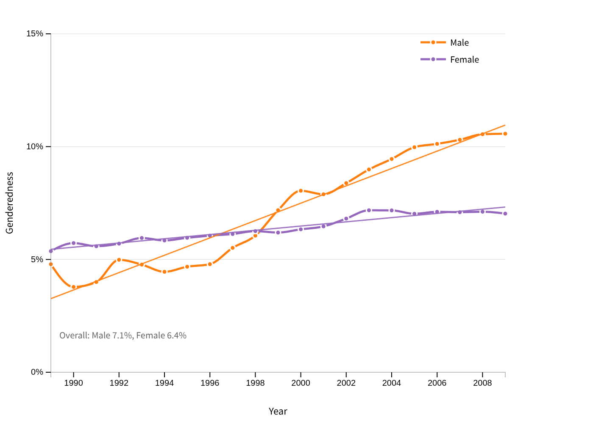
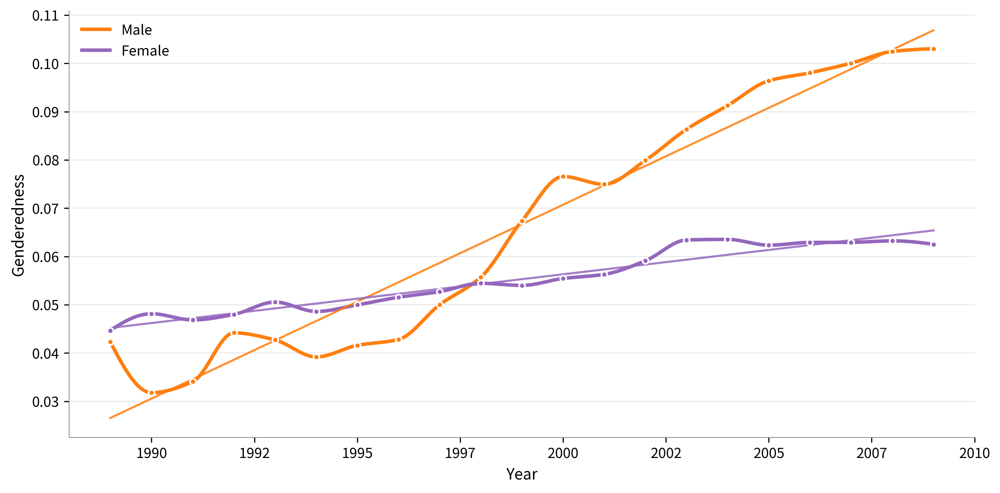
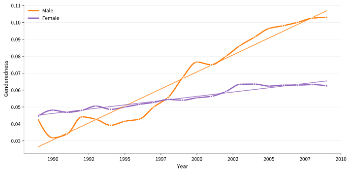
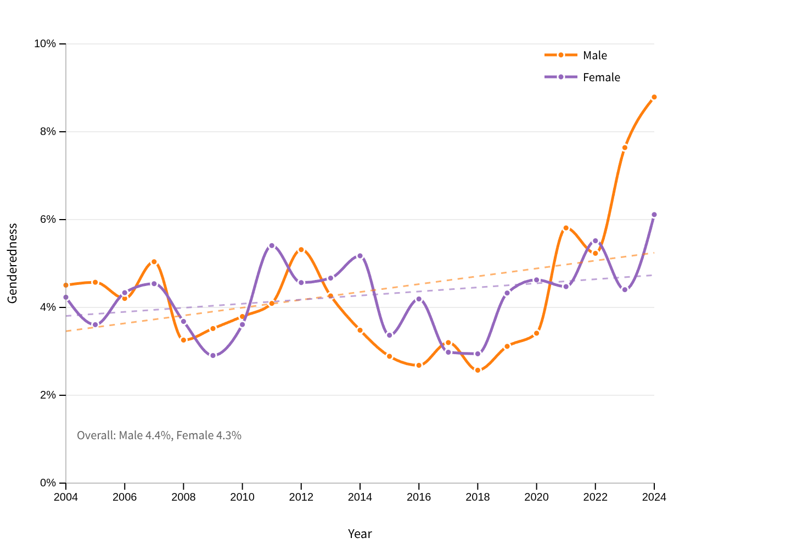
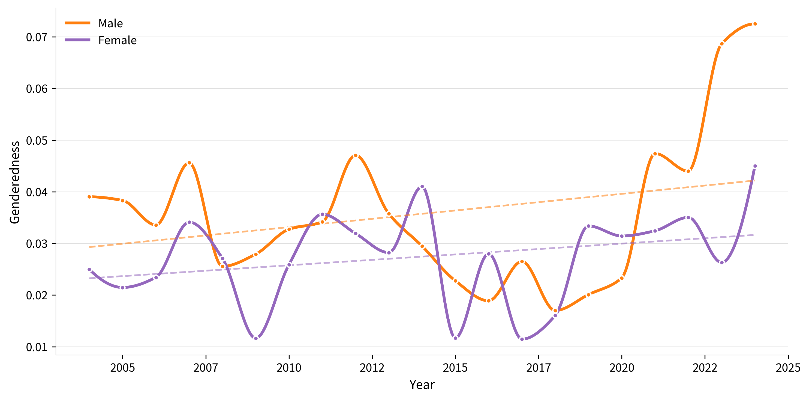
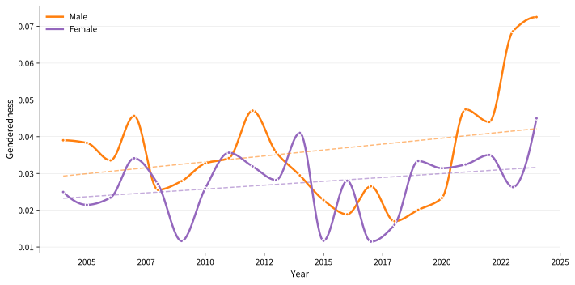
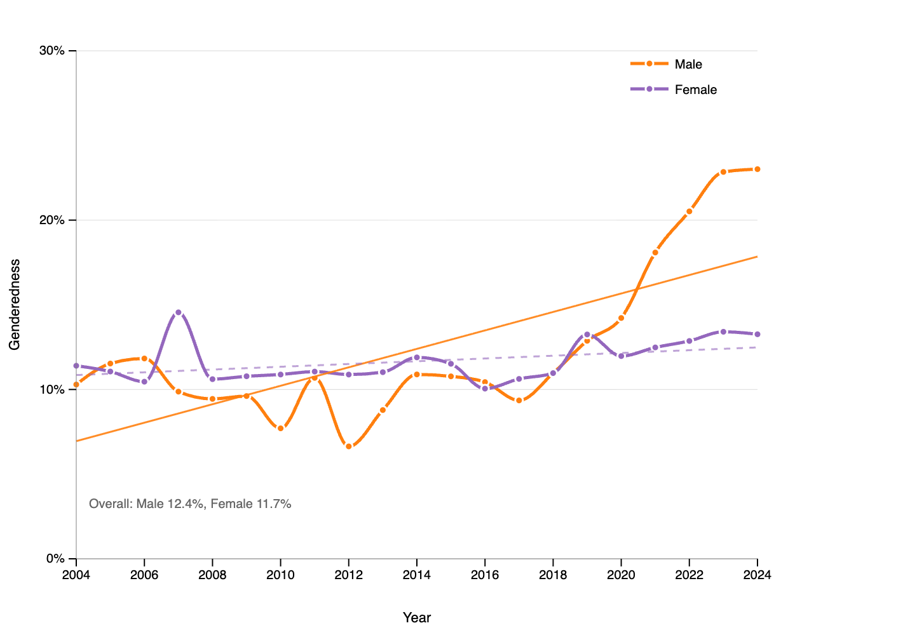
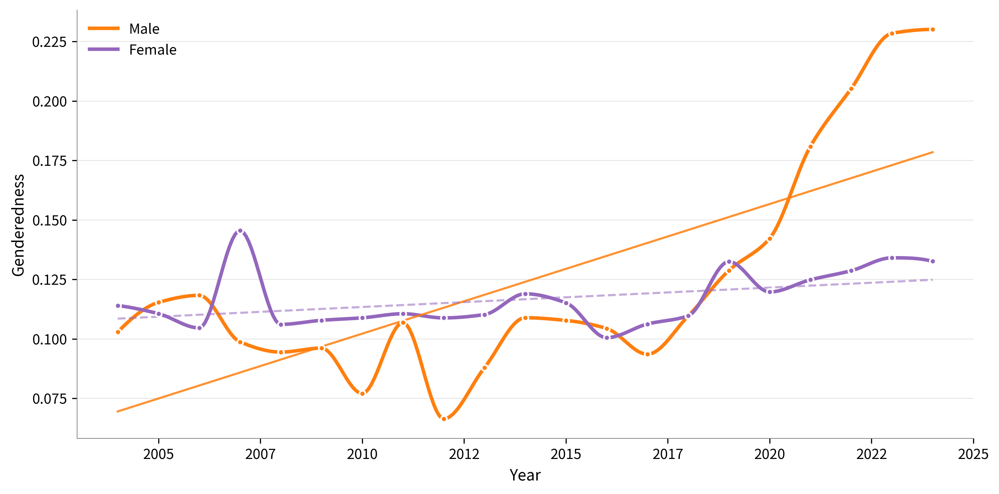

Book Figures
Figure 7AA
Figure 7AB
Figure 7AC
Figure 7AD
Figure 7BA
Figure 7BB
Figure 7BC
Figure 7BD
Figure 7CA
Figure 7CB
Figure 7CC
Figure 7CD
Figure 8A: Diversity measures for the Heisei Namae Jiten data
Figure 8B: Diversity measures for the Heisei Namae Jiten data
Figure 8C: Diversity measures for the Heisei Namae Jiten data
Figure 8D: Diversity measures for the Heisei Namae Jiten data
Figure 9: Distribution of irregular readings in the Baby Calendar database
Figure 21A: Change in genderedness for Heisei Namae Jiten data
Manuscript
PNG
SVG
Figure 21B: Change in genderedness for Meiji Yasuda data (top 100 graphic)
Manuscript
PNG
SVG
Figure 21C: Change in genderedness for Meiji Yasuda data (top 50 phonological)
Manuscript
PNG
SVG